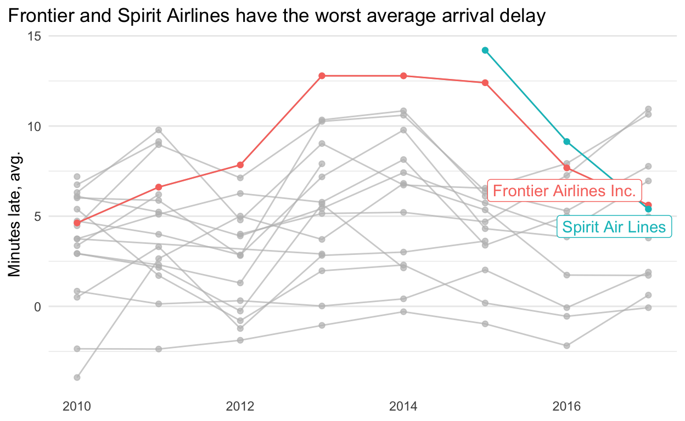

Follow along
You can download this .Rmd file below if you’d like to follow along. I do have a few hidden notes you can disregard. This document is a distill_article, so you may want to change to an html_document to knit. You will also need to delete any image references to properly knit, since you won’t have those images.
Resources
- SQL chapter of Modern Data Science with R (MDSR for short) by Baumer, Kaplan, and Horton
- Databases chapter of Jeff Leek and Roger D. Peng’s Advanced Data Science 2020 course.
- Vebash Naidoo’s blog posts
dbplyrSQL translation vignette- Databases using R from RStudio
Goals
The goal of this tutorial is not to teach you everything there is to know about SQL. Rather, I will show you some of the main SQL functions, how we can use them in R Studio, how they are related to dplyr functions you are familiar with, and how we can actually write dplyr code that will be translated to SQL in the background by the dbplyr package (part of tidyverse) - magic! I will do a few examples. If you want to see more examples, check out the resources I have linked to above.
Why SQL?
If you ever work somewhere that has large troves of data, it will likely be stored in some type of database. In many cases, the datasets would be so large that you would not be able to read the entire dataset into R. It would crash your computer. We can use SQL queries to to do as much processing as we can in the database. Then, we can bring a much smaller dataset into R.
SQL is one of the common types of databases. And, even if you use a different one in the future, much of what you learn here would be easily transferable. You can read more detail about connecting to databases from R in the R Studio documentation.
Another related tool we won’t have time to talk about in class is sparklyr, an R package that can be used to push some machine learning work off of your computer.
Set up
First, we load the libraries we will use. There will be some new ones you’ll need to install.
library(tidyverse) # for reading in data, graphing, and cleaning
library(dbplyr) # for SQL query "cheating" - part of tidyverse but needs to be loaded separately
library(mdsr) # for accessing some databases - goes with Modern Data Science with R textbook
library(RMySQL) # for accessing MySQL databases
library(RSQLite) # for accessing SQLite databases
Connecting to a database and exploring it
Throughout this tutorial, we will use the airlines database, which is a SQL database hosted on AWS created by the authors of MDSR.
We can connect to the database using the following code. This is what code that connects to a MySQL database would normally look like.
con_air <- dbConnect(RMySQL::MySQL(),
dbname = "airlines",
host = "mdsr.cdc7tgkkqd0n.us-east-1.rds.amazonaws.com",
user = "mdsr_public",
password = "ImhsmflMDSwR")
There is also a short-cut function from the mdsr library that can be used:
con_air <- dbConnect_scidb("airlines")
Now that we are connected to the database, let’s see what’s in it. We can write R code to list the tables in the database. This is in an R code chunk.
dbListTables(con_air)
[1] "airports" "carriers" "flights" "planes" Or we can insert a SQL code chunk and write SQL code to do the same thing. To insert a SQL code chunk, choose Insert SQL from the dropdown bar in the same area as the Knit button. You need to put the database name in the connection argument in the code chunk option. Here is a short video clip to illustrate:
SHOW TABLES;| Tables_in_airlines |
|---|
| airports |
| carriers |
| flights |
| planes |
We can also see the variable names in a database using either R code:
dbListFields(con_air, "flights")
[1] "year" "month" "day"
[4] "dep_time" "sched_dep_time" "dep_delay"
[7] "arr_time" "sched_arr_time" "arr_delay"
[10] "carrier" "tailnum" "flight"
[13] "origin" "dest" "air_time"
[16] "distance" "cancelled" "diverted"
[19] "hour" "minute" "time_hour" Or SQL code in a SQL code chunk:
DESCRIBE flights;| Field | Type | Null | Key | Default | Extra |
|---|---|---|---|---|---|
| year | smallint(4) | YES | MUL | NA | |
| month | smallint(2) | YES | NA | ||
| day | smallint(2) | YES | NA | ||
| dep_time | smallint(4) | YES | NA | ||
| sched_dep_time | smallint(4) | YES | NA | ||
| dep_delay | smallint(4) | YES | NA | ||
| arr_time | smallint(4) | YES | NA | ||
| sched_arr_time | smallint(4) | YES | NA | ||
| arr_delay | smallint(4) | YES | NA | ||
| carrier | varchar(2) | NO | MUL |
NOTE: If you are inactive in the database for a while (I’m not exactly sure how long), the database will disconnect. You can also tell it to disconnect using the function dbDisconnect() with the database name as an argument, which I will do at the end of this tutorial.
Working with the database, SQL queries
As we delve into SQL code, I think it’s helpful to use this table to remember how SQL relates to R functions, mostly from dplyr:
| R | SQL |
|---|---|
select() |
SELECT |
tbl() |
FROM |
filter() |
WHERE |
group_by() |
GROUP BY |
arrange() |
ORDER BY |
inner_join() |
INNER JOIN or JOIN |
head(x) |
LIMIT x |
This is not an exhaustive list, but gets us pretty far. You may notice that mutate() and summarize() are not on the list of dplyr functions. That is because those computations are done in the SQL SELECT. Just like there are many functions we can use within mutate() and summarize() in R, there are many functions we can use in a SELECT in SQL. You can see a list of some here.
Let’s go through a few examples of some SQL code, or SQL queries. These are all written inside of SQL code chunks, NOT R code chunks.
- We start with a simple example that pulls in the first 20 rows of the
flightsdata to point out a couple things about SQL queries: a) You can use*to mean all the variables, b) UseLIMITto pull back fewer rows, especially with a query you’re unsure about, c) All SQL queries end with a semi-colon,;.
SELECT *
FROM flights
LIMIT 20;| year | month | day | dep_time | sched_dep_time | dep_delay | arr_time | sched_arr_time | arr_delay | carrier | tailnum | flight | origin | dest | air_time | distance | cancelled | diverted | hour | minute | time_hour |
|---|---|---|---|---|---|---|---|---|---|---|---|---|---|---|---|---|---|---|---|---|
| 2010 | 10 | 1 | 1 | 2100 | 181 | 159 | 2320 | 159 | XE | N11137 | 2558 | EWR | OMA | 162 | 1133 | 0 | 0 | 21 | 0 | 2010-10-01 21:00:00 |
| 2010 | 10 | 1 | 1 | 1920 | 281 | 230 | 2214 | 256 | B6 | N659JB | 562 | FLL | SWF | 131 | 1119 | 0 | 0 | 19 | 20 | 2010-10-01 19:20:00 |
| 2010 | 10 | 1 | 3 | 2355 | 8 | 339 | 334 | 5 | B6 | N563JB | 701 | JFK | SJU | 196 | 1597 | 0 | 0 | 23 | 55 | 2010-10-01 23:55:00 |
| 2010 | 10 | 1 | 5 | 2200 | 125 | 41 | 2249 | 112 | XE | N16559 | 5982 | IAD | BNA | 82 | 542 | 0 | 0 | 22 | 0 | 2010-10-01 22:00:00 |
| 2010 | 10 | 1 | 7 | 2245 | 82 | 104 | 2347 | 77 | OO | N908SW | 6433 | LAX | FAT | 37 | 209 | 0 | 0 | 22 | 45 | 2010-10-01 22:45:00 |
| 2010 | 10 | 1 | 7 | 10 | -3 | 451 | 500 | -9 | AA | N3FRAA | 700 | LAX | DFW | 150 | 1235 | 0 | 0 | 0 | 10 | 2010-10-01 00:10:00 |
| 2010 | 10 | 1 | 7 | 2150 | 137 | 139 | 2337 | 122 | DL | N347NW | 1752 | ATL | IAD | 70 | 533 | 0 | 0 | 21 | 50 | 2010-10-01 21:50:00 |
| 2010 | 10 | 1 | 8 | 15 | -7 | 538 | 537 | 1 | CO | N73283 | 1740 | SMF | IAH | 193 | 1609 | 0 | 0 | 0 | 15 | 2010-10-01 00:15:00 |
| 2010 | 10 | 1 | 8 | 10 | -2 | 643 | 645 | -2 | DL | N333NW | 2344 | LAS | CVG | 196 | 1678 | 0 | 0 | 0 | 10 | 2010-10-01 00:10:00 |
| 2010 | 10 | 1 | 10 | 2225 | 105 | 831 | 642 | 109 | B6 | N585JB | 174 | SJC | JFK | 293 | 2570 | 0 | 0 | 22 | 25 | 2010-10-01 22:25:00 |
If we want to save the results of this query to a table in R, we could do the following in an R code chunk. I will often write the SQL query in a SQL chunk first to make sure everything goes as planned, and then copy and paste it to an R code chunk like this. NOTE: there is NOT a semicolon at the end of the query when you do this!
small_query <-
tbl(con_air,
sql("
SELECT *
FROM flights
LIMIT 20
")
)
small_query
# Source: SQL [?? x 21]
# Database: mysql 5.7.33-log
# [@mdsr.cdc7tgkkqd0n.us-east-1.rds.amazonaws.com:/airlines]
year month day dep_time sched_dep_time dep_delay arr_time
<int> <int> <int> <int> <int> <int> <int>
1 2010 10 1 1 2100 181 159
2 2010 10 1 1 1920 281 230
3 2010 10 1 3 2355 8 339
4 2010 10 1 5 2200 125 41
5 2010 10 1 7 2245 82 104
6 2010 10 1 7 10 -3 451
7 2010 10 1 7 2150 137 139
8 2010 10 1 8 15 -7 538
9 2010 10 1 8 10 -2 643
10 2010 10 1 10 2225 105 831
# … with more rows, and 14 more variables: sched_arr_time <int>,
# arr_delay <int>, carrier <chr>, tailnum <chr>, flight <int>,
# origin <chr>, dest <chr>, air_time <int>, distance <int>,
# cancelled <int>, diverted <int>, hour <int>, minute <int>,
# time_hour <chr>Also notice that, although this looks like an R data.frame or tibble, it is actually a special type of table.
class(small_query)
[1] "tbl_MySQLConnection" "tbl_dbi" "tbl_sql"
[4] "tbl_lazy" "tbl" - In this example, we will compute some summary statistics about the
flightsdataset. We will find the minimum and maximum years in the dataset, the total number of flights, and the number of distinct carriers. We’re back to writing this in a SQL chunk. This query takes some time to run (~45 seconds on my computer). With theCOUNTfunction, since we are interested in counting all the rows (each row is a flight), we use*instead of a specific variable. We could also put any variable in there instead of*. There are nearly 48 million flights in this database! (I believe data get added regularly, so it might be even bigger when you run this.)
SELECT
MIN(`year`) AS `min_year`,
MAX(`year`) AS `max_year`,
COUNT(*) as `num_flights`,
COUNT(DISTINCT(carrier)) as num_carriers
FROM `flights`| min_year | max_year | num_flights | num_carriers |
|---|---|---|---|
| 2010 | 2017 | 47932811 | 20 |
Now, let’s add some complexity. We will find, for each carrier, the proportion of flights that are more than 20 minutes late. Order the carriers from largest to smallest proportion. If you are new to SQL, I would recommend doing this in pieces to make sure your code works.
First, I see that I can use logic in SQL. It returns 0’s and 1’s rather than
TRUEs andFALSEs like in R. This is good, because I’m going to want to do some math on them.
SELECT
carrier,
arr_delay,
year,
(arr_delay > 20) as late_over20
FROM flights
LIMIT 20;| carrier | arr_delay | year | late_over20 |
|---|---|---|---|
| XE | 159 | 2010 | 1 |
| B6 | 256 | 2010 | 1 |
| B6 | 5 | 2010 | 0 |
| XE | 112 | 2010 | 1 |
| OO | 77 | 2010 | 1 |
| AA | -9 | 2010 | 0 |
| DL | 122 | 2010 | 1 |
| CO | 1 | 2010 | 0 |
| DL | -2 | 2010 | 0 |
| B6 | 109 | 2010 | 1 |
If I group the data by carrier and take the average of late_over20, that will give me the proportion of flights that are more than 20 minutes late. I have limited the initial dataset here in the main FROM. To get an idea of how long my query will run, I start with a small limit (like 100) and continue to increase it, usually by multiples of ten. When I’m sure it can handle the entire dataset, I remove that part.
SELECT
carrier,
AVG(arr_delay > 20) AS prop_late_over20
FROM (SELECT * FROM flights LIMIT 10000) `fl`
GROUP BY carrier
ORDER BY `prop_late_over20` DESC;| carrier | prop_late_over20 |
|---|---|
| B6 | 0.4404 |
| OH | 0.2269 |
| 9E | 0.1557 |
| US | 0.1476 |
| MQ | 0.1243 |
| EV | 0.1214 |
| OO | 0.1186 |
| CO | 0.1175 |
| DL | 0.1003 |
| AA | 0.0973 |
So, our final query is below. This takes about a minute to run.
SELECT
carrier,
AVG(arr_delay > 20) AS prop_late_over20
FROM flights
GROUP BY carrier
ORDER BY `prop_late_over20` DESC;| carrier | prop_late_over20 |
|---|---|
| NK | 0.1984 |
| B6 | 0.1927 |
| OH | 0.1818 |
| F9 | 0.1795 |
| EV | 0.1773 |
| MQ | 0.1697 |
| VX | 0.1693 |
| XE | 0.1680 |
| AA | 0.1553 |
| UA | 0.1539 |
- We’ll do one more example with even more complexity, including a join. For each year and carrier, find the number of flights, the average arrival delay, and the average distance of the flight. Use carrier name. Arrange the results by longest average delay within year.
First, I’ll do the summarizing without joining to carriers. I do this on a sample of data.
SELECT
year,
carrier,
COUNT(*) AS n_flights,
AVG(arr_delay) AS avg_arr_delay,
AVG(distance) AS avg_distance
FROM (SELECT * FROM flights LIMIT 1000) fl
GROUP BY year, carrier;| year | carrier | n_flights | avg_arr_delay | avg_distance |
|---|---|---|---|---|
| 2010 | 9E | 47 | -10.0213 | 391.1277 |
| 2010 | AA | 75 | 6.8133 | 1057.4667 |
| 2010 | AS | 20 | -7.2500 | 976.7500 |
| 2010 | B6 | 31 | 62.9032 | 1213.8710 |
| 2010 | CO | 40 | -6.6500 | 1042.5500 |
| 2010 | DL | 114 | -5.9298 | 854.2982 |
| 2010 | EV | 66 | -10.8939 | 411.0909 |
| 2010 | F9 | 14 | -8.5714 | 960.2143 |
| 2010 | FL | 36 | -11.0833 | 594.0278 |
| 2010 | HA | 13 | 0.4615 | 341.5385 |
Now, I’ll join the carriers data, which only has two variables. I join to the already summarized data, which will be less work computationally.
SELECT
year,
name,
n_flights,
avg_arr_delay,
avg_distance
FROM (SELECT
year,
carrier,
COUNT(*) AS n_flights,
AVG(arr_delay) AS avg_arr_delay,
AVG(distance) AS avg_distance
FROM (SELECT * FROM flights LIMIT 1000) fl
GROUP BY year, carrier) smry
INNER JOIN carriers AS c
ON (smry.carrier = c.carrier)
ORDER BY year, avg_arr_delay DESC;| year | name | n_flights | avg_arr_delay | avg_distance |
|---|---|---|---|---|
| 2010 | JetBlue Airways | 31 | 62.9032 | 1213.8710 |
| 2010 | PSA Airlines Inc. | 26 | 9.6923 | 423.9615 |
| 2010 | American Airlines Inc. | 75 | 6.8133 | 1057.4667 |
| 2010 | US Airways Inc. | 56 | 0.5357 | 821.0893 |
| 2010 | Hawaiian Airlines Inc. | 13 | 0.4615 | 341.5385 |
| 2010 | Envoy Air | 82 | -0.4024 | 475.0976 |
| 2010 | ExpressJet Airlines Inc. (1) | 85 | -1.3412 | 527.9765 |
| 2010 | SkyWest Airlines Inc. | 123 | -4.8130 | 425.1382 |
| 2010 | Delta Air Lines Inc. | 114 | -5.9298 | 854.2982 |
| 2010 | Mesa Airlines Inc. | 24 | -6.4583 | 482.3750 |
I will skip running the full query for now, but you would replace (SELECT * FROM flights LIMIT 1000) with flights to do that. We’ll see the results in the next section.
Working with the database, dbplyr “cheating”
If you’re new to SQL that last section might have been a bit tricky to do on your own (although I’m confident you could read the code I wrote and would figure it out on your own eventually). Well, you’re in luck! As the section heading indicates, we can “cheat” in writing our SQL code by using dplyr functions. These will get translated to SQL using the dbplyr package.
If you feel a little rusty in your dplyr skills, you can review the main ones here (I suggest also downloading the demo video file) and more advanced ones, including joins, here. Not ALL functions are translatable. You can check the list here or use the translate_sql() function to check vector expressions (functions applied to variables in the dataset), for example:
translate_sql(mean(x))
<SQL> AVG(`x`) OVER ()The code that it shows may not be perfect or you may want to simplify it further, but it should at least give you an idea if that function is even possible to translate to SQL.
I am going to illustrate this by replicating the examples we went through above.
- Pull in the first 20 rows of the
flightsdata. The only different between this code and regulardplyrcode is the way we access the data, usingtbl().
tbl(con_air, "flights") %>%
head(20)
# Source: lazy query [?? x 21]
# Database: mysql 5.7.33-log
# [@mdsr.cdc7tgkkqd0n.us-east-1.rds.amazonaws.com:/airlines]
year month day dep_time sched_dep_time dep_delay arr_time
<int> <int> <int> <int> <int> <int> <int>
1 2010 10 1 1 2100 181 159
2 2010 10 1 1 1920 281 230
3 2010 10 1 3 2355 8 339
4 2010 10 1 5 2200 125 41
5 2010 10 1 7 2245 82 104
6 2010 10 1 7 10 -3 451
7 2010 10 1 7 2150 137 139
8 2010 10 1 8 15 -7 538
9 2010 10 1 8 10 -2 643
10 2010 10 1 10 2225 105 831
# … with more rows, and 14 more variables: sched_arr_time <int>,
# arr_delay <int>, carrier <chr>, tailnum <chr>, flight <int>,
# origin <chr>, dest <chr>, air_time <int>, distance <int>,
# cancelled <int>, diverted <int>, hour <int>, minute <int>,
# time_hour <chr>We can see the SQL query that is automagically (actually, someone wrote a lot of code to do it, but it sure seems like magic!) run in the background.
flights_20 <-
tbl(con_air, "flights") %>%
head(20)
show_query(flights_20)
<SQL>
SELECT *
FROM `flights`
LIMIT 20class(flights_20)
[1] "tbl_MySQLConnection" "tbl_dbi" "tbl_sql"
[4] "tbl_lazy" "tbl" We can also write this out to a data.frame using the collect() function.
flights_20_df <- collect(flights_20)
flights_20_df
class(flights_20_df)
[1] "tbl_df" "tbl" "data.frame"- In this example, we will compute some summary statistics about the
flightsdataset. We will find the minimum and maximum years in the dataset, the total number of flights, and the number of distinct carriers. Just like when we did this with a SQL query, this does take a minute to run. (NOTE: This chunk no longer works! There are workarounds, but it does not seem necessary to discuss at this point in time.)
We can also look at the SQL code that was written in the background. This looks similar to the code I wrote above, although I tried to make it a little more readable. (This chunk also doesn’t work since the previous one wasn’t run. I am keeping it here in hopes that it will be fixed next time I teach this.)
overall_smry %>%
show_query()
- Next, we will find, for each carrier, the proportion of flights that are more than 20 minutes late. Order the carriers from largest to smallest proportion. When I first ran this, I put the
head(100)in to make sure I didn’t get any weird results. I am going to skip outputting the table here because I’m going to plot the data in a moment. Outputting the table is really where the code is executed, and I want to avoid doing that twice.
flights_over20 <-
tbl(con_air, "flights") %>%
# head(100) %>%
group_by(carrier) %>%
summarize(prop_late_over20 = mean(arr_delay > 20)) %>%
arrange(desc(prop_late_over20))
We could %>% right into a plot, too! This code takes a while to run because the query is executed here. If we wanted to use the data from the SQL query over and over again, it would be a good idea to save it to a data.frame using collect().
flights_over20 %>%
ggplot(aes(x = prop_late_over20,
y = fct_reorder(carrier, prop_late_over20, median))) +
geom_col(fill = "lightblue") +
scale_x_continuous(expand = c(0,0),
labels = scales::percent) +
labs(x = NULL,
y = NULL,
title = "Which airlines had the largest % of flights that \nwere more than 20 minutes late from 2010-2017?") +
theme_minimal()

Let’s also look at the SQL query generate for us:
flights_over20 %>%
show_query()
<SQL>
SELECT `carrier`, AVG(`arr_delay` > 20.0) AS `prop_late_over20`
FROM `flights`
GROUP BY `carrier`
ORDER BY `prop_late_over20` DESC- And, for the last exercise! For each year and carrier, find the number of flights, the average arrival delay, and the average distance of the flight. Use carrier name. Arrange the results by longest average delay within year.
This time, we’ll save the data to a data.frame. This query takes a minute to run.
carrier_info_df <-
carrier_info %>%
collect()
Let’s also look at the SQL code. It’s a little harder to read than what I wrote.
carrier_info %>%
show_query()
<SQL>
SELECT *
FROM (SELECT `year`, `LHS`.`carrier` AS `carrier`, `n_flights`, `avg_arr_delay`, `avg_distance`, `name`
FROM (SELECT `year`, `carrier`, COUNT(*) AS `n_flights`, AVG(`arr_delay`) AS `avg_arr_delay`, AVG(`distance`) AS `avg_distance`
FROM `flights`
GROUP BY `year`, `carrier`) `LHS`
INNER JOIN `carriers` AS `RHS`
ON (`LHS`.`carrier` = `RHS`.`carrier`)
) `q01`
ORDER BY `year`, `avg_arr_delay` DESCLastly, let’s plot the data. I’m using the data that is already in R as a data.frame so the SQL query doesn’t execute again.
library(gghighlight)
carrier_info_df %>%
ggplot(aes(x = year,
y = avg_arr_delay,
color = name)) +
geom_point() +
geom_line() +
gghighlight(max(avg_arr_delay) > 12) +
labs(title = "Frontier and Spirit Airlines have the worst average arrival delay",
x = NULL,
y = "Minutes late, avg.") +
theme_minimal() +
theme(panel.grid.minor.x = element_blank(),
panel.grid.major.x = element_blank(),
plot.title.position = "plot")

The last thing we should do is disconnect from the database.
dbDisconnect(con_air)
[1] TRUE